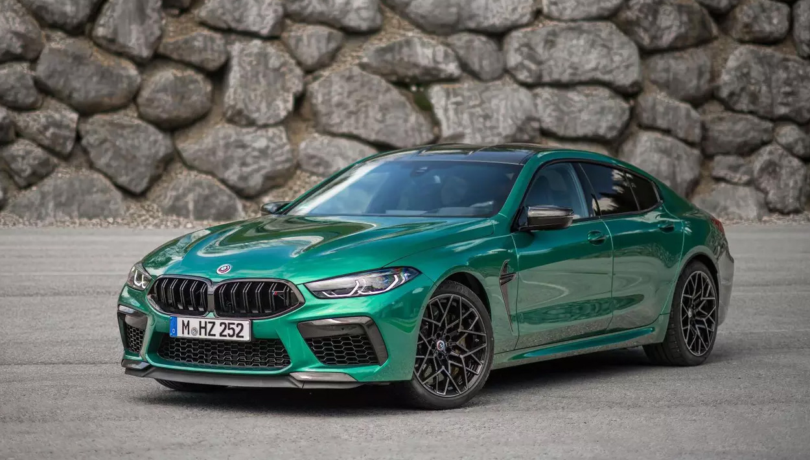
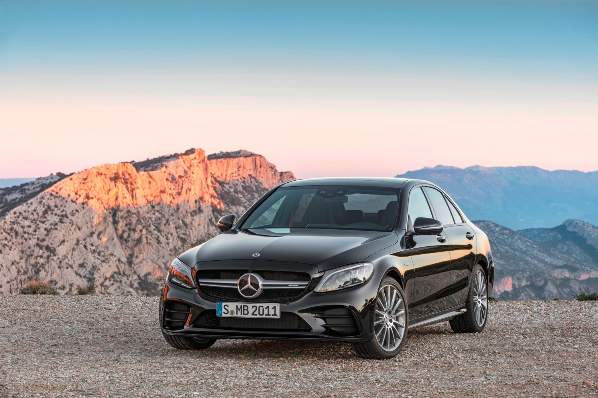
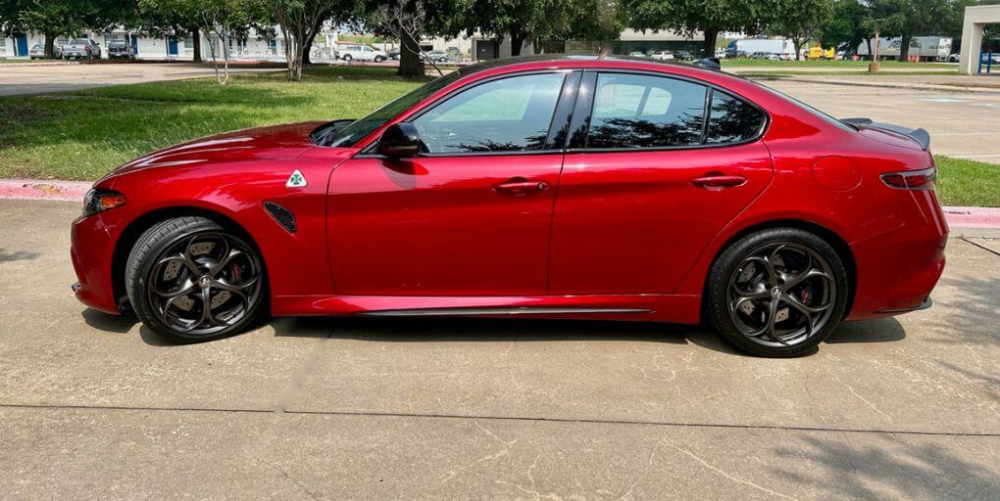
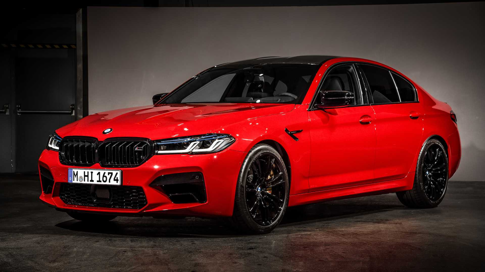
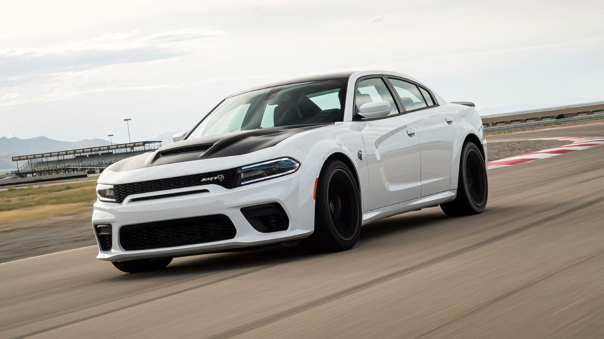

Кузов СПОРТ-СЕДАН

Спортивный седан (Sport Sedan) – это модифицированная версия классического седана с акцентом на высокую мощность, динамику и управляемость. Такие автомобили сочетают в себе практичность четырёхдверного кузова с характеристиками, близкими к спорткарам: мощные двигатели, продвинутая подвеска, агрессивный дизайн и современные технологии.
Основные характеристики:
- Форма кузова: Классический силуэт седана, но с аэродинамическими элементами (спойлеры, агрессивные бамперы, увеличенные воздухозаборники).
- Количество дверей: 4 боковые + крышка багажника.
- Компоновка: Чаще задний или полный привод, реже передний.
- Двигатели: Высокопроизводительные бензиновые (чаще турбированные) или гибридные силовые установки.
- Подвеска и тормоза: Жёсткая спортивная подвеска, усиленные тормоза, заниженный клиренс.
- Интерьер: Спортивные сиденья, карбоновые вставки, цифровая приборная панель.
Классификация:

Mercedes-AMG C43

Alfa Romeo Giulia
- Мощные гражданские седаны – комфортные, но с быстрым разгоном (Audi S4, BMW M340i, Mercedes-AMG C43).
- Спорт-седаны среднего класса – уже ориентированы на динамику (BMW M3, Alfa Romeo Giulia, Mercedes-AMG C63).
- Премиум спорт-седаны – топовые модели с максимальными характеристиками (BMW M5, Mercedes-AMG E63).
- Экстремальные версии – суперкары в кузове седана (Dodge Charger Hellcat, Cadillac CT5-V Blackwing).

BMW M5

Dodge Charger Hellcat
Преимущества:
- Высокая мощность и динамика – ускорение от 0 до 100 км/ч за 3–5 секунд.
- Отличная управляемость – продвинутые системы подвески и полного привода.
- Практичность – 4 двери и просторный салон делают их удобными для повседневного использования.
- Стиль и эксклюзивность – агрессивный дизайн, качественные материалы, спортивные технологии.
Недостатки:
- Высокая цена – как на сам автомобиль, так и на обслуживание.
- Расход топлива – мощные моторы потребляют много бензина.
- Жёсткая подвеска – в городе может быть некомфортно.
- Дорогой ремонт – запчасти и обслуживание стоят дорого.
Спортивный седан – это идеальный выбор для тех, кто хочет сочетать высокую скорость и динамику с практичностью обычного седана. Такие автомобили подходят как для езды по городу, так и для трека, обеспечивая комфорт и удовольствие от вождения.